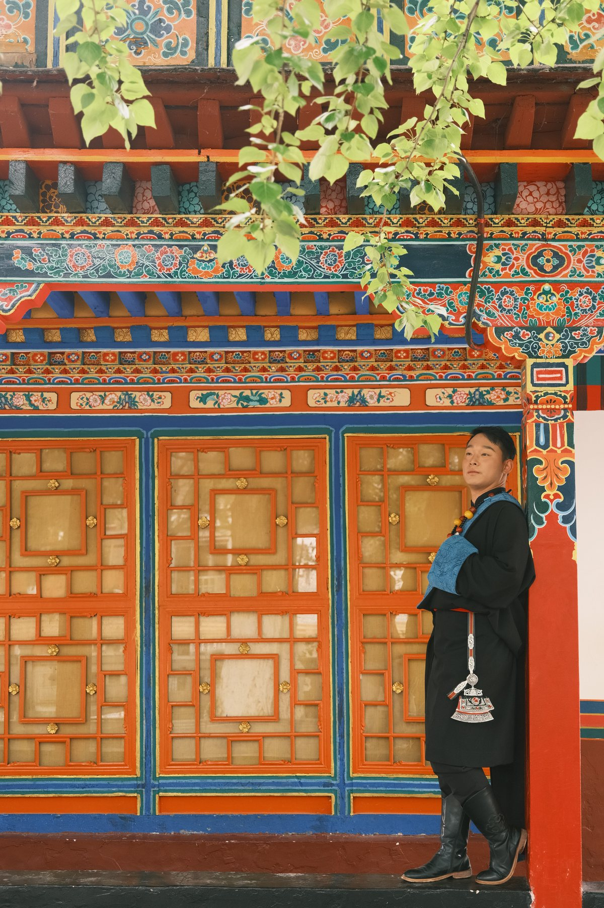
出发
从第一眼进入藏地
阳光落在屋檐和衣纹上，旅程从这片热烈的颜色里开始。
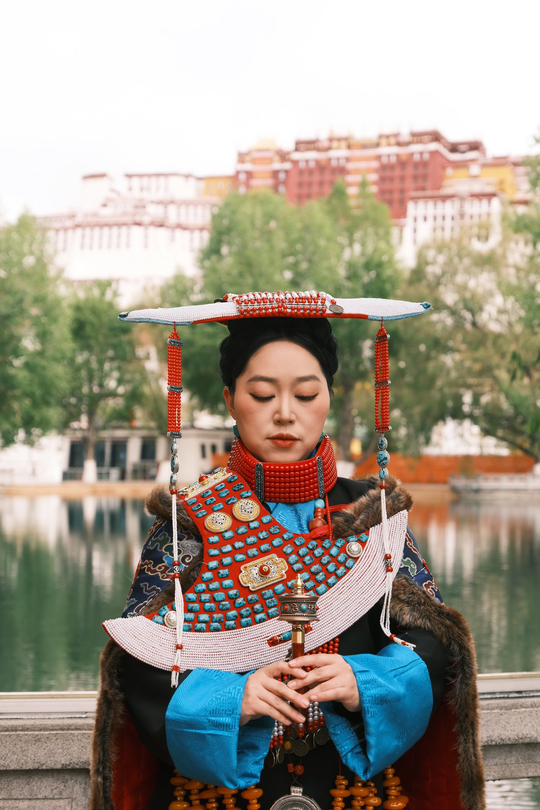
A Day In Tibet
这一页不是攻略，也不是介绍。它只把旅途中最值得停留的瞬间收在一起：衣饰的颜色、远处的白墙、身边的风，以及那一刻真实的你。
Trail Beats

阳光落在屋檐和衣纹上，旅程从这片热烈的颜色里开始。
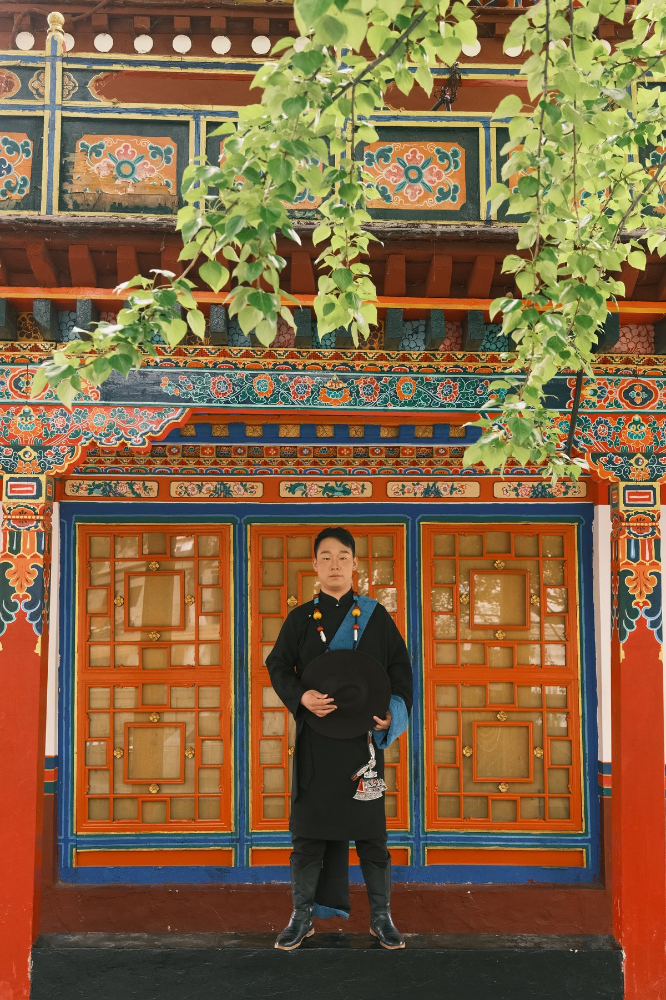
停下、回头、向前走，每一张都像路上轻轻按下的一个标记。
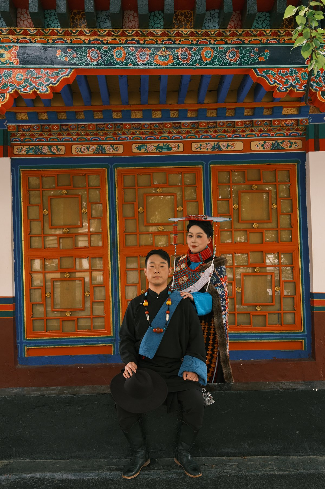
抵达不只是终点，也是多年后还能想起的风声和笑意。
Guest Gallery
不需要很多解释，画面自己会把当天的光、风和心情说完。
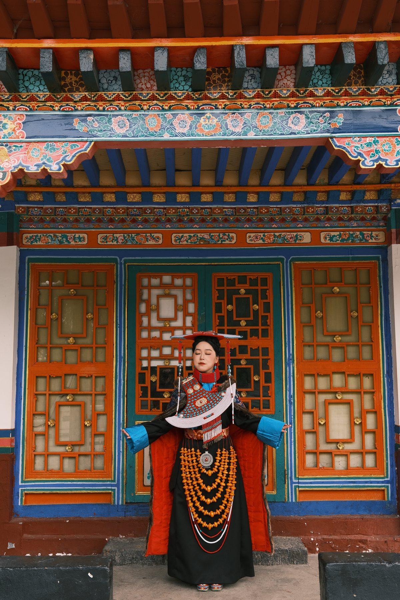
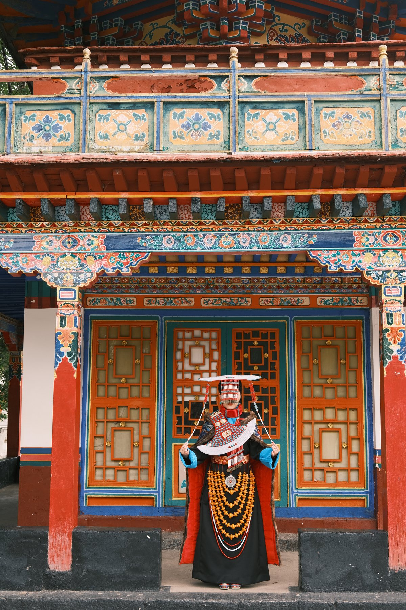
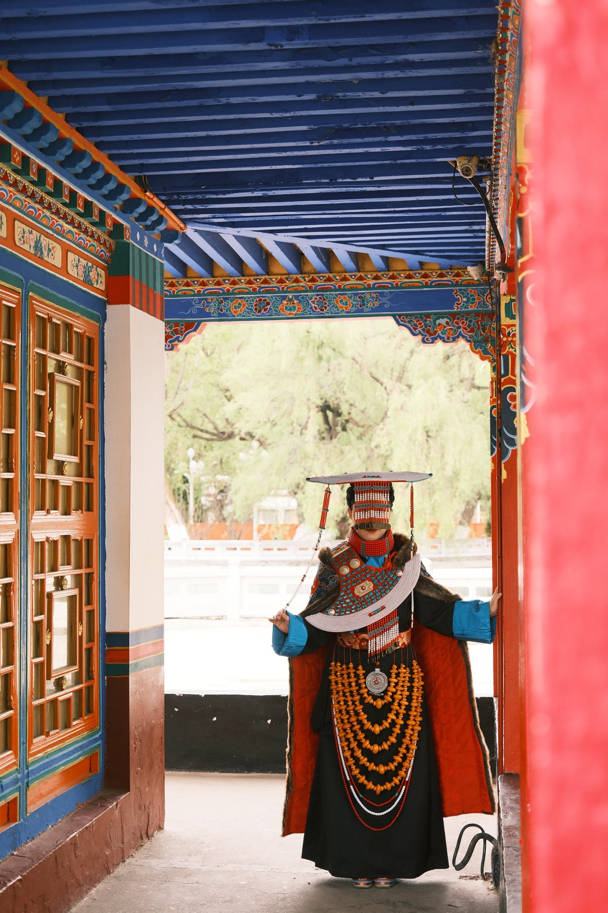
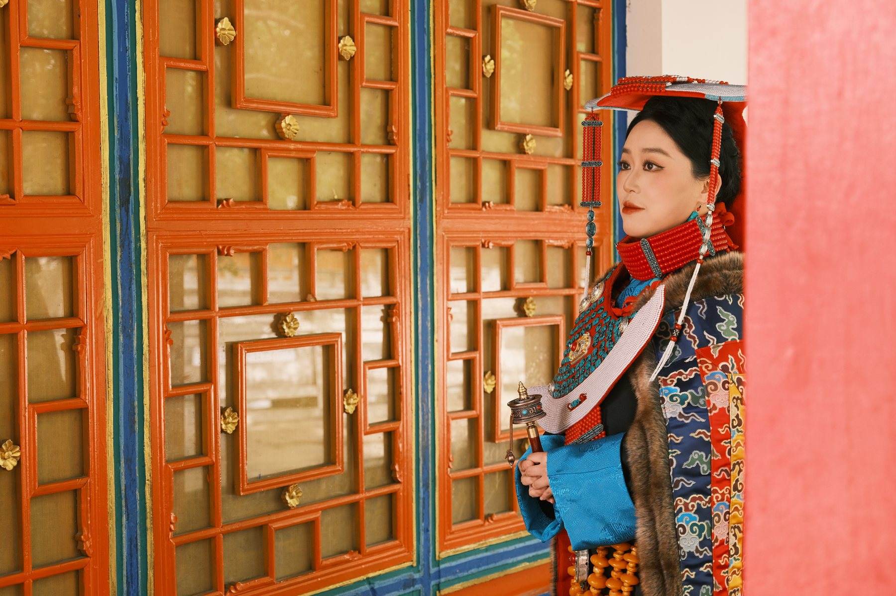
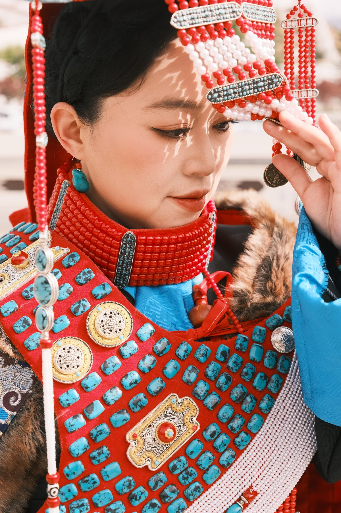
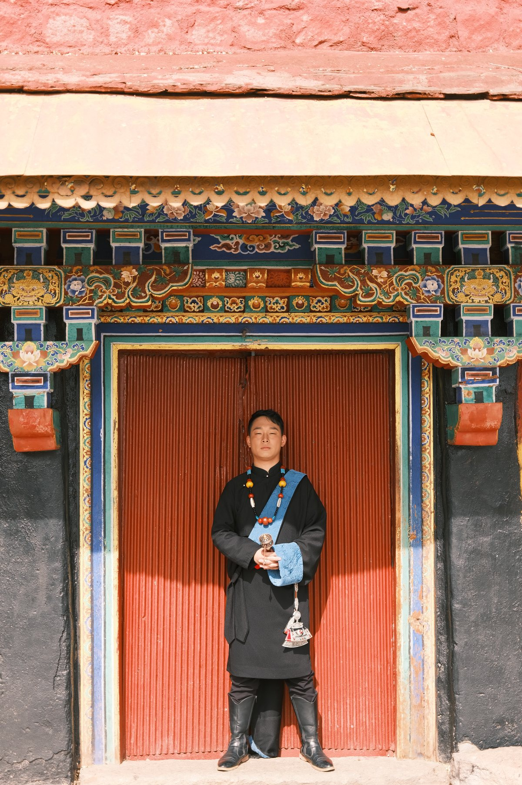
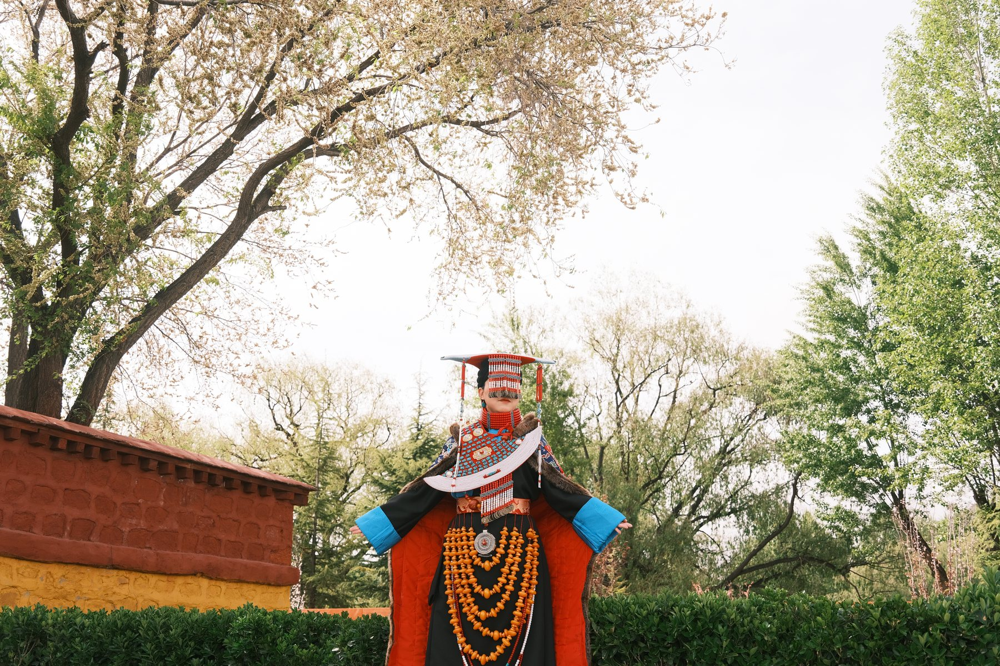
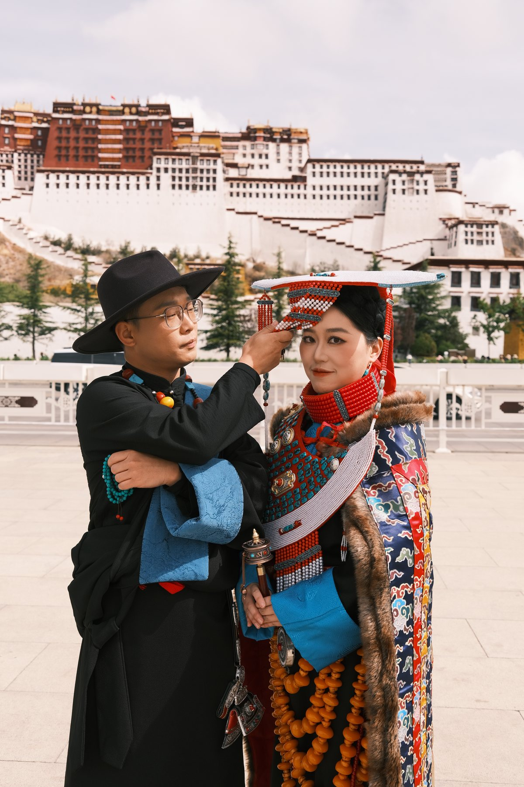
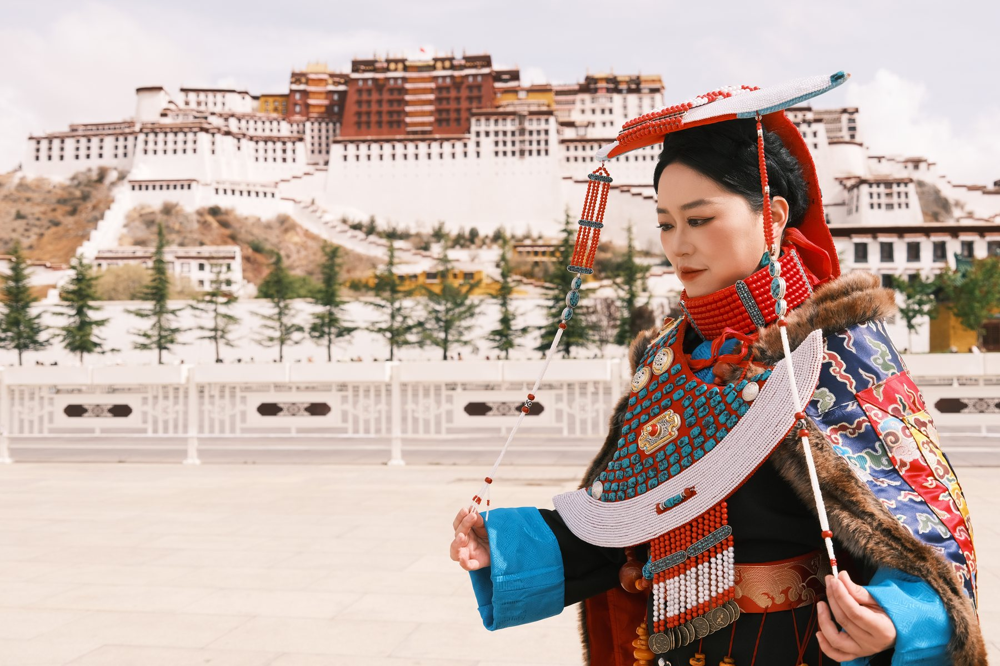
Memory Notes
有些照片适合发出去，有些照片适合留给自己。这里留下的是后者：安静、完整，等你某天再打开。
Keep This Day
它把旅途里的声音留在照片之外，却留在记忆里面。
每一次回看，都是重新靠近那一刻。
愿这组照片，替你把故事妥帖地保存下来。